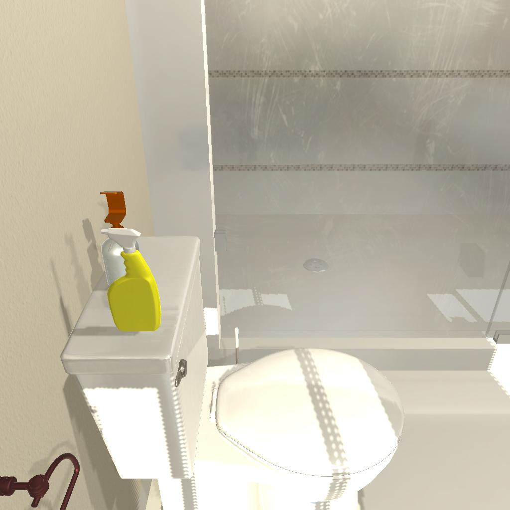

---------------------------------------------------------task: 28---------------------------------------------------------
--------------------------------------------------------------------------------------------------------------------------------------------------------------------
--------------------------------------------------------------------------------------------------------------------------------------------------------------------
Step:--------------------------------------------------------------------------10-------------------------------------------------------------------------------
----------------------------------------
VLM Prompt:
Image1:
Image2:
Image3:
**Instruction**
1. Analyze the provided images to identify all visible household objects and compare the difference between images (e.h. whether the object is opened or not and taken on hand or not), focusing on those relevant to the task description "put two spraybottle in toilet."
2. Use the analysis of images and the task hint "The agent must find an object of the desired type, pick it up, find the correct location to place it, put it down there, then look for another object of the desired type, pick it up, return to previous location, and put it down there with the other object." to answer the question: what is the most reasonable action in the choices for the task description "put two spraybottle in toilet"?
3. Decide and write the answer using the template: The answer is: (i): , where i is the real number. If there is no desired object in images, search every place based on **Initial Observation** to find the object. And if no one is exactly correct, choose a similar answer.
**Initial Observation**
You are in the middle of a room. Looking quickly around you, you can see bathtub (1), bathtubbasin (1), cart (1), sink (1), garbagecan (1), sinkbasin (1), countertop (1), drawer (1-4), toilet (1), toiletpaperhanger (1)
**Answer Choices**
(1): go to bathtub 1
(2): go to bathtubbasin 1
(3): go to cart 1
(4): go to sink 1
(5): go to garbagecan 1
(6): go to sinkbasin 1
(7): go to drawer 1
(8): go to drawer 2
(9): go to drawer 3
(10): go to drawer 4
(11): go to toilet 1
(12): go to toiletpaperhanger 1
(13): take tissuebox 1 from countertop 1
(14): take toiletpaper 1 from countertop 1
(15): take handtowel 1 from countertop 1
(16): take candle 1 from countertop 1
(17): examine countertop 1
**Answer**
Let's think step by step by following the instructions.
----------------------------------------
----------------------------------------
Original Response:
1. Analyzing the provided images:
- Image 1 and Image 2 are duplicates, showing a spray bottle on the top of a toilet tank.
- Image 3 shows a countertop with various objects, including a roll of toilet paper and a candle, but no spray bottle.
2. Based on the task description "put two spraybottle in toilet," we need to find two spray bottles. We can see one spray bottle in Image 1 and Image 2 (which are the same). There are no other spray bottles visible in the provided images.
3. Based on the initial observation, we should search for another spray bottle in places not visible in the images. The most reasonable places to search would be inside drawers, as they are common storage spaces for such items.
The answer is: (7): go to drawer 1. If the desired object is not found there, continue searching in the other drawers sequentially.
----------------------------------------
----------------------------------------
>>> Refine Original VLM Response and Get Pure Action: go to drawer 1
----------------------------------------
-----------------------------------------------------------------
Running time: 9.63131594657898 seconds
Total Money: 17.810749999999985
-----------------------------------------------------------------
-----------------------------------------------------------------
Text Observation:You arrive at loc 7. The drawer 1 is closed.
-----------------------------------------------------------------
UNSUCCEED